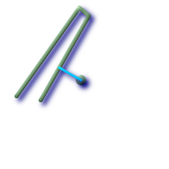
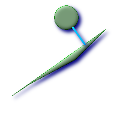

ST_ShortestLine — 2つのジオメトリの2次元長が最短となるラインを返します。
geometry ST_ShortestLine(geometry
g1, geometry
g2);
2つのジオメトリの、2次元の最短ラインを返します。見つかった最短線が複数ある場合は、最初のもののみ返します。g1とg2が1点のみでインタセクトする場合は、インタセクション点を開始点と終了点とします。g1とg2が一点以上でインタセクトする場合は、同じ点を開始点と終了点としますが、その点は不定です。返されるラインは常にg1を始点、g2を終点とします。
初出: 1.5.0
 ポイントとラインストリングの最短ライン
SELECT ST_AsText(
ST_ShortestLine('POINT(100 100)'::geometry,
'LINESTRING (20 80, 98 190, 110 180, 50 75 )'::geometry)
) As sline;
sline
-----------------
LINESTRING(100 100,73.0769230769231 115.384615384615)
|  ポリゴンとポリゴンの最短ライン
SELECT ST_AsText(
ST_ShortestLine(
ST_GeomFromText('POLYGON((175 150, 20 40, 50 60, 125 100, 175 150))'),
ST_Buffer(ST_GeomFromText('POINT(110 170)'), 20)
)
) As slinewkt;
LINESTRING(140.752120669087 125.695053378061,121.111404660392 153.370607753949)
|